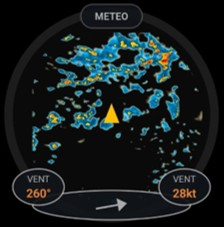
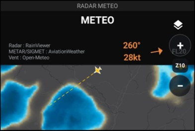

Possibilités
- Radar de précipitations (RainViewer) centré sur la position.
- METAR : pastilles colorées par catégorie de vol (VFR / MVFR / IFR / LIFR), cliquables → METAR brut + TAF.
- SIGMET : zones de phénomènes dangereux (orages, turbulence, givrage…) dessinées et cliquables → détail (nature, sommet, texte brut). Sources : AviationWeather.gov.
- Vent au FL20 (Open-Meteo) : flèche orange + direction/vitesse.
- Terrains proches.
NUMMTO — carte interactive directement dans la case
- Contrairement à l'ancienne vignette, NUMMTO affiche la carte complète dans la case (fond sombre + radar + METAR + SIGMET), zoom 10 par défaut — plus besoin d'appui long pour l'ouvrir.
- En-tête soignée : titre METEO, sources, bloc vent FL20, et un bouton calques.
- Calques activables : Radar, METAR/TAF, SIGMET — choix mémorisé.
- Icône avion orientée selon le cap + trajectoire future en pointillés.
- Pinch-to-zoom, déplacement et boutons + / − ; tap sur une pastille METAR (détail METAR/TAF) ou une zone SIGMET.
Gestes supportés
ANLMTO — Appui long : ouvrir la carte météo plein écran.
NUMMTO — la carte est interactive dans la case : pincer pour zoomer, déplacer, boutons + / −, bouton calques, tap sur une station.
Double-tap : —
Note
- Nécessite GPS + réseau.
ANLMTO

NUMMTO
